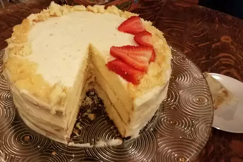

Birthday cake

Description
This is a classic birthday cake recipe that uses basic ingredients found in any pantry most of the time.
It is easy to make and kids love it!
Ingredients
- 1 cup butter
- 3 cups cake flour
- 4 egg yolks, room temperature
- 2 cups white sugar, divided
- 4 egg whites, room temperature
- 1 cup milk, room temperature
- 2 teaspoons baking powder
- 1 teaspoon vanilla extract
Steps
- Preheat oven to 350 degrees F (175 degrees C). Grease and flour three 9-inch round pans
- Beat butter and 1 cup of sugar with an electric mixer in a large bowl until light and fluffy. The mixture should be noticably lighter in color.
- In a separate bowl, beat egg yolks well, then add to butter mixture.
- Beat egg whites until stiff but not dry. Add 1 cup sugar to the egg whites. Fold into cake batter.
- Divide evenly into three prepared 9 inch round pans, Bake at 350 degrees F for 25 minutes.